©1969 source unknown
1969
live video
380,000 km
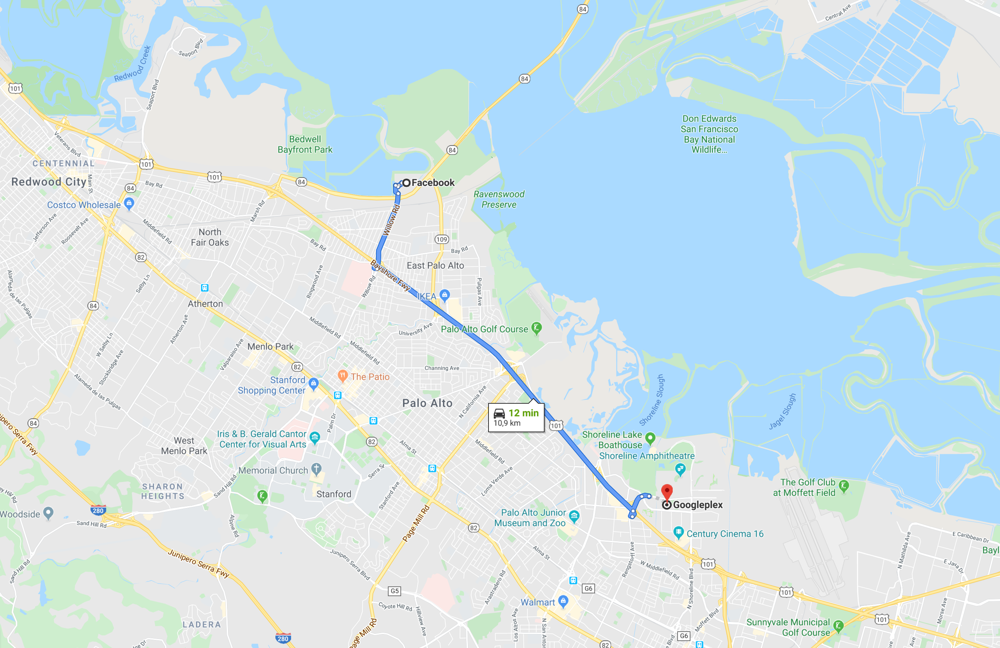
©2020 Google Maps
2019
photo
11 km
We are facing an innovation problem
and it pertains to personal data.
Let’s look for answers to these questions:
- How has the Web enabled innovation in the past?
- Why are major companies struggling to innovate?
- What is missing from the Web for innovation today?
The history of computing
started out centralized.
-
Large mainframes provided computational power
for an entire organization.
-
People brought punched cards to a control room,
where they were processed by a machine.
-
When networking came along,
terminals interfaced with mainframes.
-
The server possessed magnitudes more
computational power
than the client.
Personal computing decentralized
computational power.
-
Personal computers were able to perform
enough calculations for simple software.
- spreadsheets
- word processing
- …
-
Up to the 2000s, only few of these
were connected to the Internet.
- Data and software were transferred using physical media.
Even when the Internet became popular,
data and CPU remained decentralized.
-
The Web provided a way to:
- retrieve information faster
- retrieve information we did not have before
-
Desktop software remained dominant.
- Data remained on-device.
- Processing remained on-device.
The software-as-a-service model brought
storage and processing to the cloud
.
-
Centralized software platforms reduced friction.
- Sharing becomes easier by linking.
- Real-time collaborative editing becomes possible.
- Users always have the latest software.
-
Data processing and storage are outsourced.
- Once again, our devices act as terminals.
-
Platforms leverage universality—and threaten it.
-
You only need a spec-compliant browser—and an account.
The pendulum of (de-)centralization
is driven by more than just technology.
-
The technological gap between clients
and servers
is smaller than ever.
-
Servers resemble ordinary computers.
-
Even some of our portable devices are more powerful
than our personal computers were a decade ago.
-
Many cloud applications could still run on-device.
-
The UI in fact often does.
-
Cloud business models have economic benefits.
Decentralization was an assumption
when the Web was designed.
The Web’s novelty was universality.
The first threat to universality
were the browser wars of the 1990s.
-
No Internet Explorer?
-
People needed a certain computer.
-
Developers depended on Microsoft’s pace.
- browsers were not very powerful
This battle was replaced by another:
the search engine wars of the 2000s.
-
Not on Google?
-
Ranking high became more important
than high-quality content.
-
The reach of your innovations
depended on one crawler.
Our data has become centralized
in a handful of Web platforms.
-
People’s former personal blogs
are now on Facebook and Twitter
- great user experience
- but we lost control
-
This has far-reaching consequences for privacy.
-
The Web’s universality is visibly threatened.
Sign in with Facebook to see this content.
-
Facebook works better with the native app.
-
Within the walled gardens of social media,
you have to move either data or people.
 © David Simonds
© David Simonds
In 2017, Tim Berners-Lee listed
three challenges for the Web.
-
We need to regain control
over our personal data.
-
We need to reduce the spread
of misinformation.
-
We need transparency and understanding
of political advertising.
All three indicate a loss of control/agency.
Tim Berners-Lee is spearheading Solid
as an ecosystem to take back control.
-
Solid is a way of building Web apps that
let people keep control of their data.
-
Solid combines existing W3C standards
to define how agents should interact.
-
It is not a new Web:
it builds on top of the existing Web.
-
Like the Web, Solid is for everyone.
-
Bring back universality and permissionless innovation.
Solid aims to restore choice
by separating data from apps.
-
Typical platforms nowadays store data
inseparably from an application.
- If we need to access the data, we cannot choose our app.
- If we need to use the app, we can’t choose our data source.
-
By separating data from apps,
we create independent choices.
-
In essence, we‘re taking Web apps back to desktop mode,
where one file can be opened by multiple apps.
Every piece of data created by a person
or about them, is stored in a data pod.
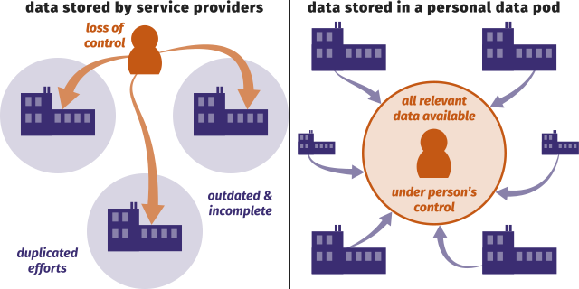
Apps and services appear similarly,
but they blend data from many sources.
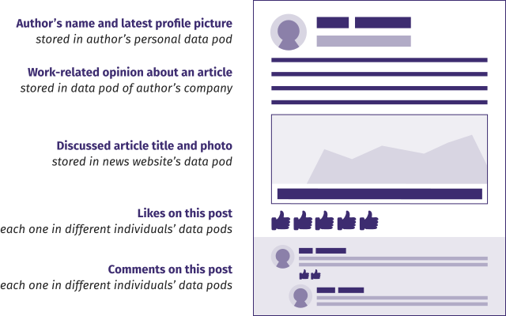
A person can grant apps and people access
to very specific parts of their data.
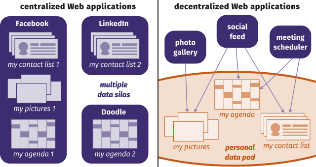
Separating app and storage competition
creates better offerings for all parties.
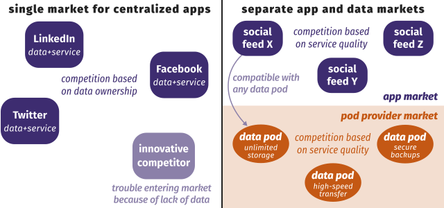
By abandoning data harvesting,
we restore permissionless innovation.
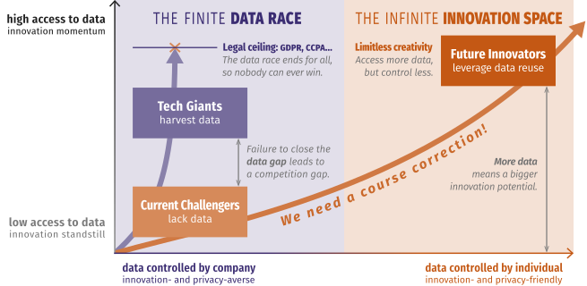
Solid is not a platform to replace others,
but a way of building for the Web.
-
Solid is an ecosystem.
- Standards enable interoperability.
-
Solid is a movement.
- We need to shift the app builder mindset.
-
Solid is a community.
-
Building Solid requires different people,
companies, and organisations.
A Solid server acts as a data pod
that stores and guards your data.
-
It is a regular Web server
- …with support for access control.
- …with support for Linked Data.
-
Its interface is application-agnostic.
- Build any application, like on the Web.
- Application-specific logic resides in clients.
-
A Solid pod is essentially a website with data.
- Its data is compatible with any Solid app.
A data pod can contain any data
you create or need online.
- profile 👤
- media 🖼
- comments 🗣
- likes 👍
- … ✨
Solid clients are browser or native apps
that read from or write to your data pod.
-
People give read and/or write permissions
for specific pieces of data to:
- apps
- other people
- automated agents
- …
-
Apps deliver an integrated experience.
-
Instead of displaying individual webpages or data items,
apps interleave data from multiple sources.
Any app you can envision,
you can build with Solid.
- calendar 📅
- social feed 👥
- photo sharing 📸
- conference organization system 🎤
- … ✨
Client–server communication is governed
by the Solid specifications.
-
The specifications are a set
of multiple documents.
-
They essentially demand compliance
with a couple of existing standards:
- HyperText Transfer Protocol (HTTP)
- Linked Data Platform (LDP)
- Linked Data Notifications (LDN)
Several open-source implementations
of servers, apps, and libraries exist.
-
server
- Use a public instance or host your own.
-
apps
-
libraries
With JSON-LD, every piece of data
can link to any other piece of data.
{
"@context": "https://www.w3.org/ns/activitystreams",
"id": "#ruben-likes-ugent",
"type": "Like",
"actor": "https://ruben.verborgh.org/profile/#me",
"object": "https://www.ugent.be/#this",
"published": "2019-04-25T08:00:00Z"
}
Data shapes and their semantics
enable layered compatibility.
{
"@context": "https://www.w3.org/ns/activitystreams",
"id": "#ruben-likes-ugent",
"type": "Like",
"actor": "https://ruben.verborgh.org/profile/#me",
"object": "https://www.ugent.be/#this",
"published": "2019-04-25T08:00:00Z"
}
Different source data
can be concatenated.
{
"@context": "https://www.w3.org/ns/activitystreams",
"@graph": [{
"type": "Like",
"actor": "https://ruben.verborgh.org/profile/#me",
"object": "https://www.ugent.be/#this",
"published": "2019-04-25T08:00:00Z"
},{
"type": "Like",
"actor": "https://example.org/people/silvia#me",
"object": "https://www.ugent.be/#this",
"published": "2019-04-25T08:05:00Z"
}]
}
Simple tasks should be simple,
complex tasks should be manageable.
People think RDF is a pain
because it is complicated.
The truth is even worse.
RDF is painfully simplistic,
but it allows you to work with real-world data
and problems that are horribly complicated.
Dan Brickley & Libby Miller
Decentralized apps have many back-ends
that need to work with many apps.
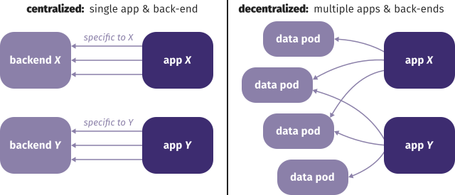
Decentralization needs replication
to achieve the expected performance.
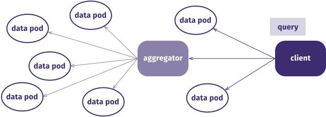
Current networks are centered
around the aggregator.
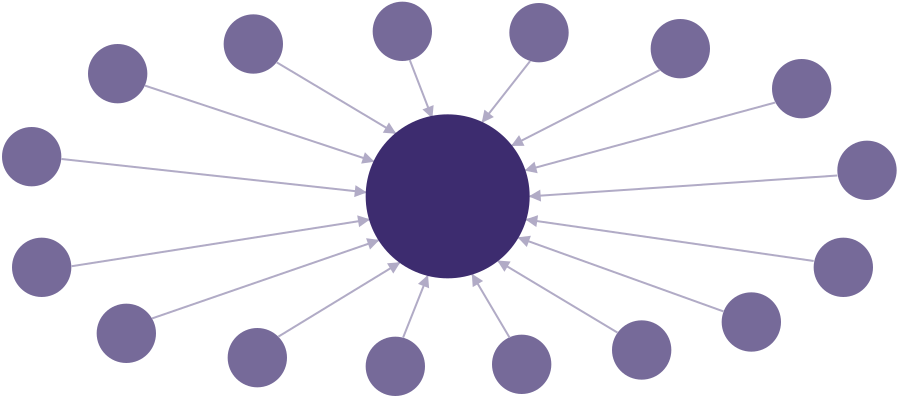
We need to create network flows
to and from the aggregator.
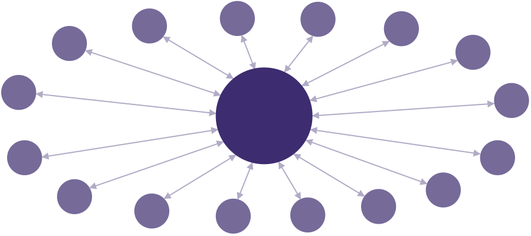
The individual network nodes
need to become the source of truth.
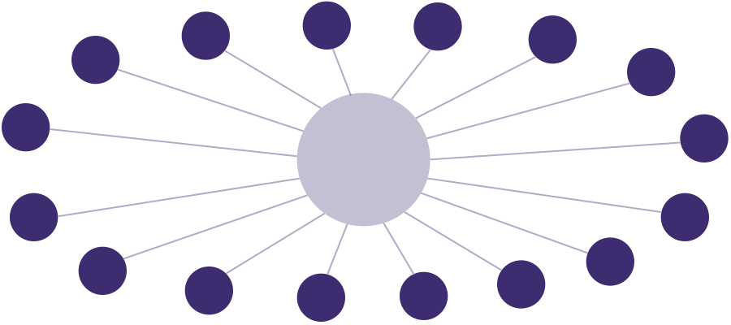
Aggregators need to become part
of a larger network.
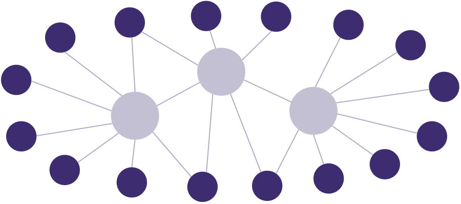
Aggregators serve as a crucial
but transparent layer in the network.
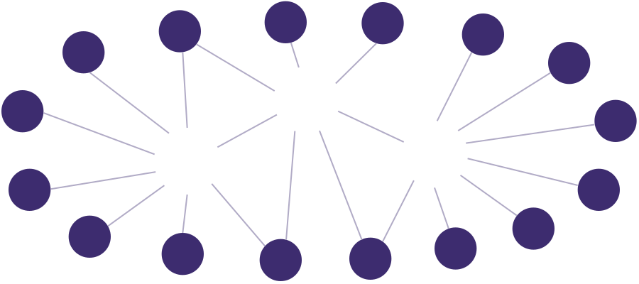
Aggregators’ main responsibility becomes
fostering a network between nodes.
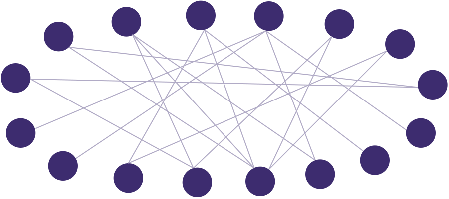
The Paradox of Freedom:
you can only be free if you follow rules.
-
Decentralization means making our own choices.
-
Unless we agree on some basic things,
no one will see the result of our choices.
-
Agreement can be layered:
- 100% agrees on a small set (labeling, authorship, …)
- 80% agrees on a larger set (places, dimensions)
- 5% agrees on many smaller sets (sizes, colors, …)
Solid apps conceptually query: read/write
data in multiple documents and pods.
-
Linked Data Fragments has proven
old assumptions wrong:
Client-side query requires the same server-side query.Servers need some dedicated query API to enable query.
-
Hence, a
query API
does not inherently exist.
All Web APIs provide some kind of queries.
-
Web APIs for decentralized ecosystems
require a very different design mindset.
Web APIs exist to provide access
to remote data or functionality.
-
action-oriented APIs
-
document-oriented APIs
-
graph-oriented APIs
Graph APIs are just a specific kind of document APIs.
We need to design, in some way,
read–write access to a knowledge graph.
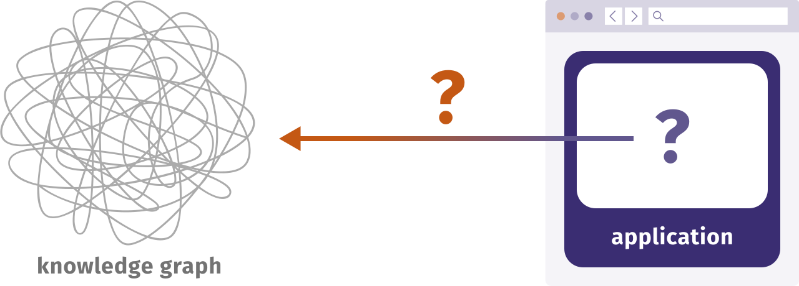
The graph is too big for any single place,
so apps reconstruct the whole via parts.
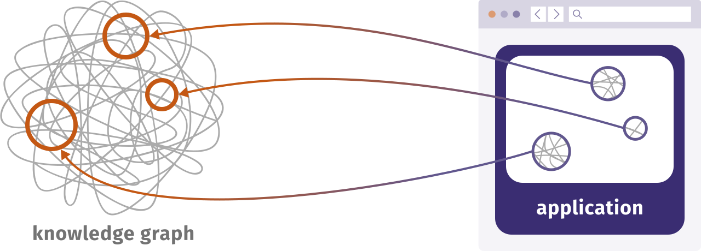
When knowledge fits in a single source,
we can place an API in front of it.
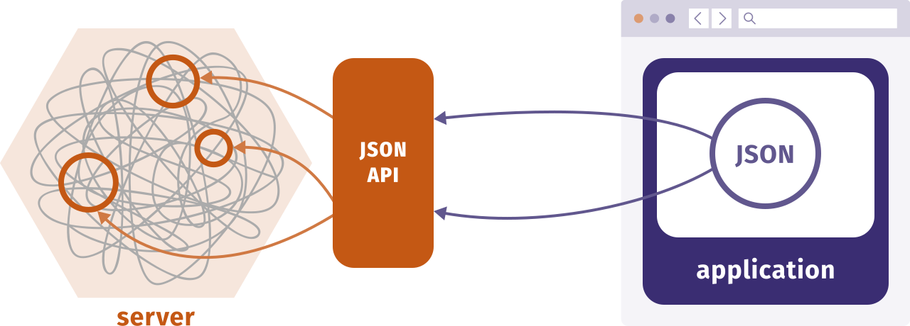
Abstract knowledge needs to be exposed
through concrete documents/resources.
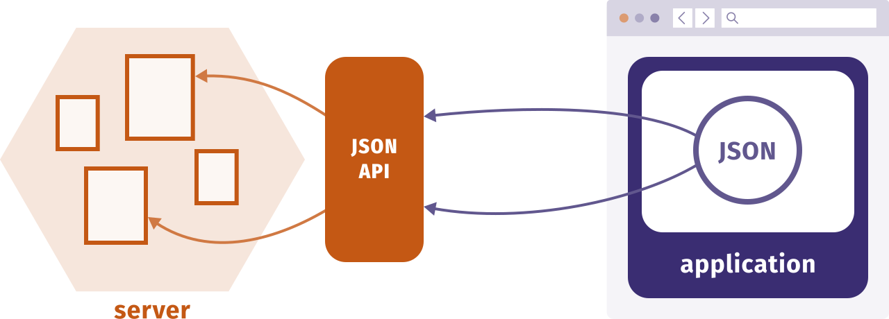
A GraphQL API combines data from across
multiple resources of the “main” API.
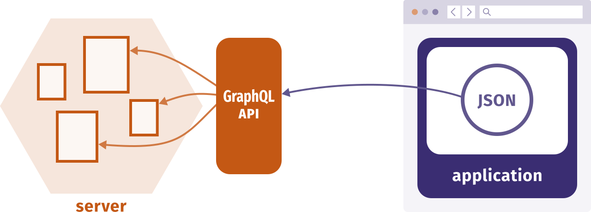
Let’s revisit API design for cases where
knowledge cannot fit in one place.
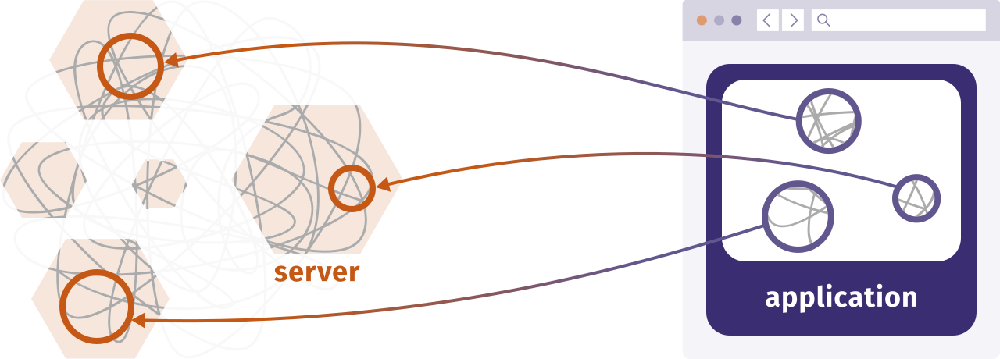
Each data pod exposes its part
as RDF through a Web API.
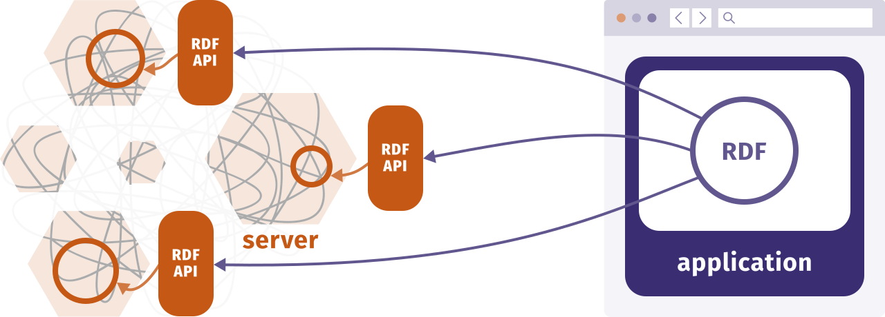
Different APIs for RDF
have different characteristics.
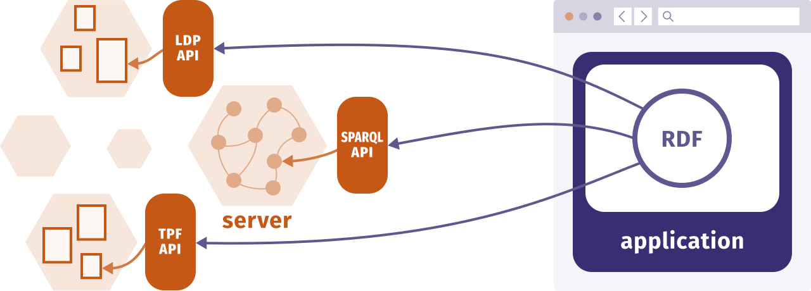
It quickly becomes unfeasible for apps
to deal with all possible API combinations.
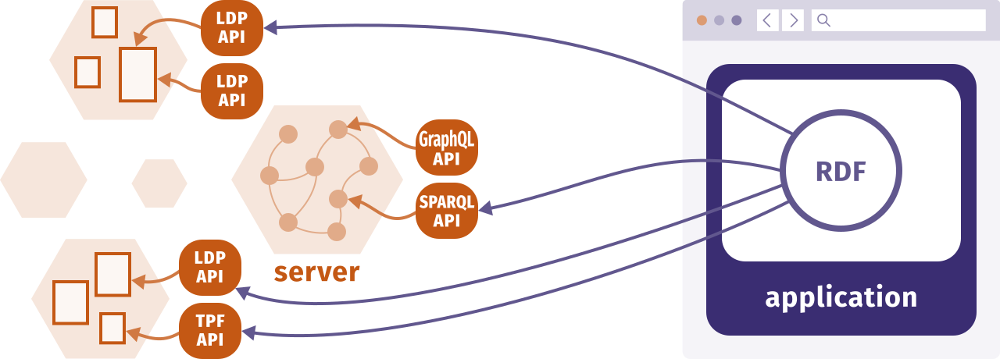
A GraphQL Web API is not possible here,
since there is no server to attach it to.
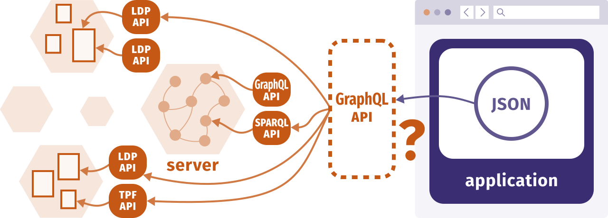
The app can still be written with GraphQL:
a library translates it into HTTP requests.
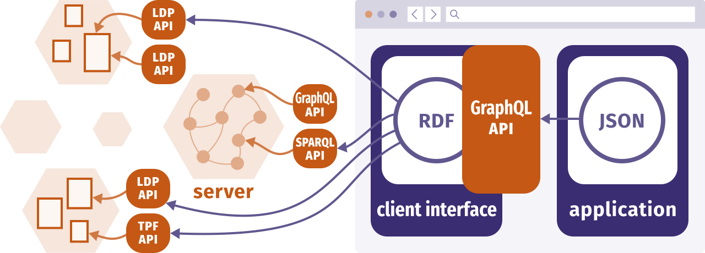
Solid technology marks a transition
from API integration to data integration.
-
Solid app developers face challenges…
…but API problems are not among those!
-
The way we write apps can be independent
of the Web APIs offered by servers.
- Clients can have their own abstractions.
-
Let's invest in reusable client development patterns.
The Web as I envisaged it,
we have not seen it yet.
The future is still so much bigger
than the past.
Tim Berners-Lee